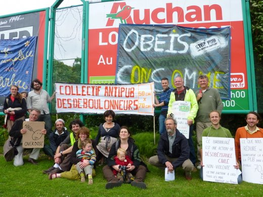
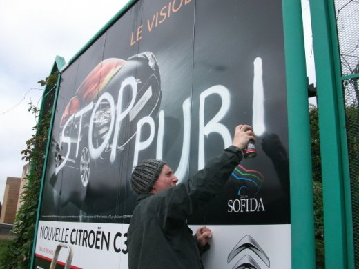
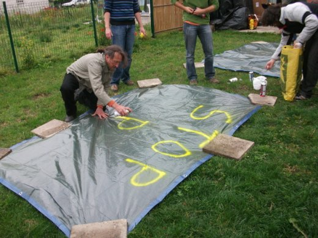
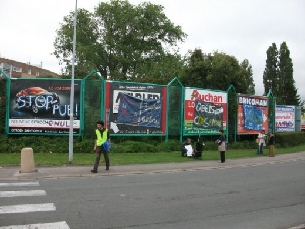

| |
Site dédié à la publication d'informations communiquées par le Collectif des déboulonneurs. En aucun cas ce site n'appelle à des actions illégales. | |
 |
||
|
Accueil du site > Lille > Création du collectif des déboulonneurs 62 et première action à (...)

Résumé de l’actionDate : Samedi 25 Juin 2011 Heure approximative de l’action elle-même : de 15h à 15h45 Lieu précis de l’action : St Omer, au grand rond point de Longuenesse séparant l’avenue Léon Blum de l’avenue Charles de Gaulle (dit horriblement rond point du Macdo) Programmme de la journée :
Nombre de panneaux touchés : 6 panneaux 4x3 Propriétaire des panneaux touchés : G&B Inscriptions portées sur les panneaux :
Le pochoir www.deboulonneurs.org fut systématiquement apposé sur les bâches et panneaux Nombre d’activistes : 15 Nombre approximatif de sympathisants : 10 Nombre approximatif de passants-spectateurs : Quelques piétons et de nombreux automobilistes Nombre approximatif de journalistes présents : 3 journalistes (Voix du Nord, L’indépendant et Delta FM) Nombre approximatif de policiers : 3 agents de la police municipale, arrivés en voiture quelque temps après le début de l’action, appelés par une personne présente sur les lieux de l’action et qui semblait être envoyée par l’afficheur. Attitude de la police : Plutôt antagoniste mais a laissé faire à partir du moment où le collectif a confirmé qu’il assumait ses actions. A procédé à des relevés d’identité et a pris des photos du groupe, mais n’a pas apprécié d’être elle même prise en photo. A fait plusieurs fois le tour du parking où le collectif est retourné après l’action. Retombées médias :
Toutes les photos : sur www.objecteursdecroissance62.fr (1) (2) (3) 
Compte-rendu détailléLes participants sont arrivés progressivement devant le lieu de rendez vous à 10h sur la place de la mairie de Saint Omer pour une distribution de tracts en ce jour de marché. Une dizaine de déboulonneurs lillois et lensois en "formation" se sont armés de tracts et les ont largement distribués aux passants et producteurs locaux. La population locale a eu vent de notre action de l’après midi sans grand engouement, des encouragements pour certains et de forts refus d’admettre l’impact négatif de la publicité sur les habitants pour d’autres. Nous avons même rencontré par hasard le maire en représentation ce jour là ! Un rapide échange avec lui nous a permis de le renseigner sur notre action et nos objectifs et de connaître davantage son point de vue sur le sujet vu la difficulté que nous avions eue à récupérer le RLP de Saint Omer et de Longuenesse (RLP datant de 1986, devenu obsolète !). Il a indiqué qu’il était sensible au recul de la pression publicitaire, dans sa ville. C’est une bonne chose. On l’encourage dans ce sens, et on saura faire preuve de vigilance. Vers 11h30 nous nous sommes regroupés pour nous rendre chez Jean-Louis et Armelle autour d’un barbecue dans le jardin nous permettant également de préparer l’action et informer davantage les lensois de nos procédés. Nous avons réalisé quatre « motifs » avec de la bombe de peinture sur autant de bâches, bâches que nous avons attelées à des ficelles reliées à des tasseaux en bois. 
Après le barbecue, Jean-Louis a distribué les rôles : Maxime et Jean-Louis ont opté pour le barbouillage, Armelle et Marion pour le contact presse, Olivier pour le contact police, Alain comme observateur et Marion pour la collecte des informations. Vers 15h notre groupe constitué à présent d’une quinzaine de participants, s’est rendu au rond-point de Longuenesse où toute une série de panneaux de 12m2 nous « tendaient les bras ». L’ensemble du groupe a activement et efficacement bâché la totalité des panneaux ciblés. Deux de ces panneaux ont été barbouillés, tandis que quatre autres ont été bâchés tandis que la banderole « Collectif des Déboulonneurs » était tendue de manière à être visible des automobilistes. Une demi-douzaine de sympathisants nous a aidés, d’autres nous ont soutenus ce qui nous a semblé déjà positif ! La presse locale s’est déplacée : l’indépendant, la voix du nord qui avait déjà annoncé notre action le jour précédent et delta FM, radio locale fortement écoutée. La police nationale (immatriculée dans le département du Nord » est alors arrivée, vraisemblablement prévenue par l’un des annonceurs (ou par l’un de ses commis) à qui il aurait été demandé s’il souhaitait porter plainte. Nous lui avons expliqué le comment du pourquoi de notre action et les policiers se sont contentés de relever quelques pièces d’identité. Vers 16 heures le groupe s’est ensuite de nouveau rendu chez Jean-Louis et Armelle pour une dégustation de bière locale et de vin (un peu moins local celui-là). 
Précision : Le soir même, les bâches étaient retirées mais pas les panneaux barbouillés. Mardi matin, le panneaux Stop Pub a été démonté et laisse place à un vaste espace vert… en attendant d’être replacé ou non !!! |
|
Site utilisant SPIP - Hébergement Ouvaton
|